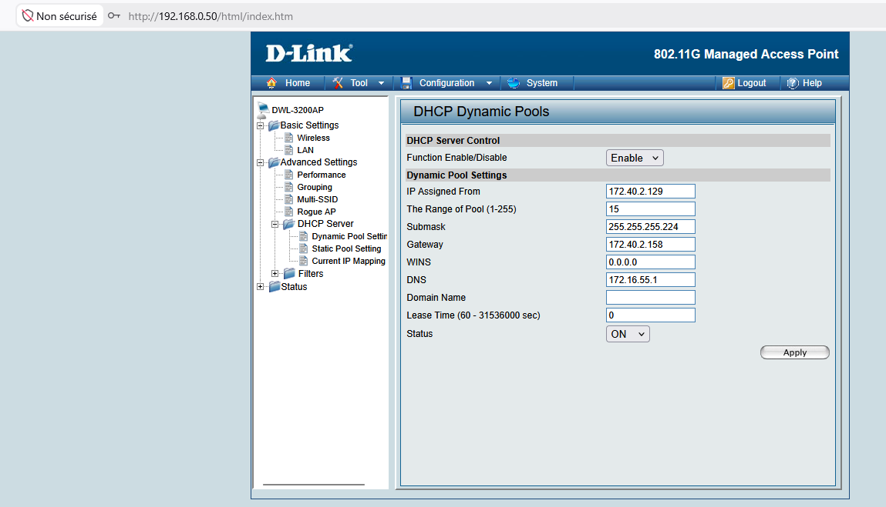
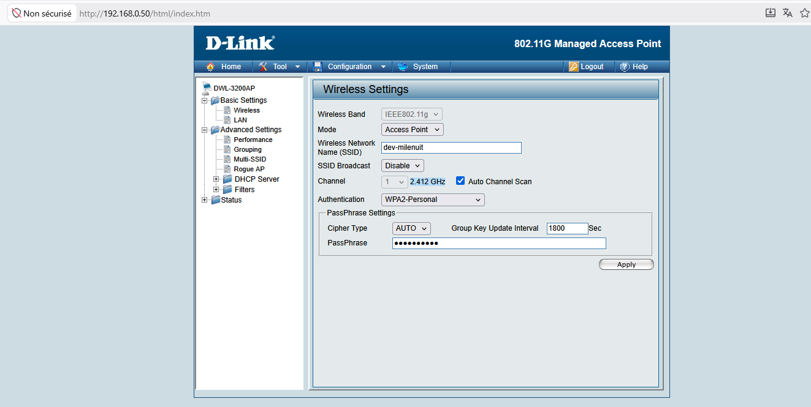
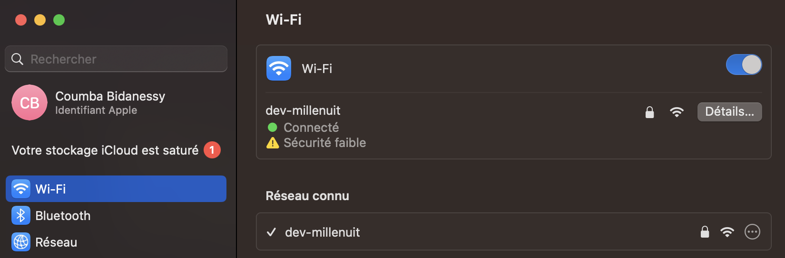
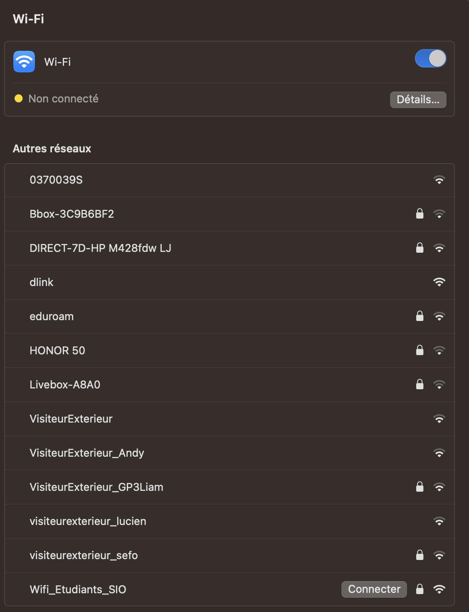
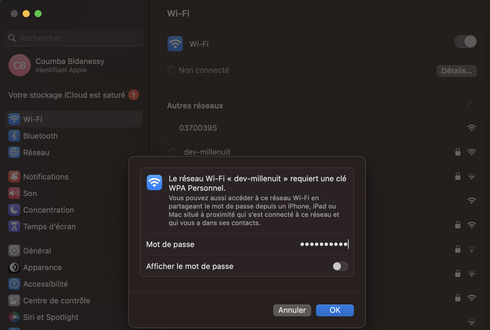
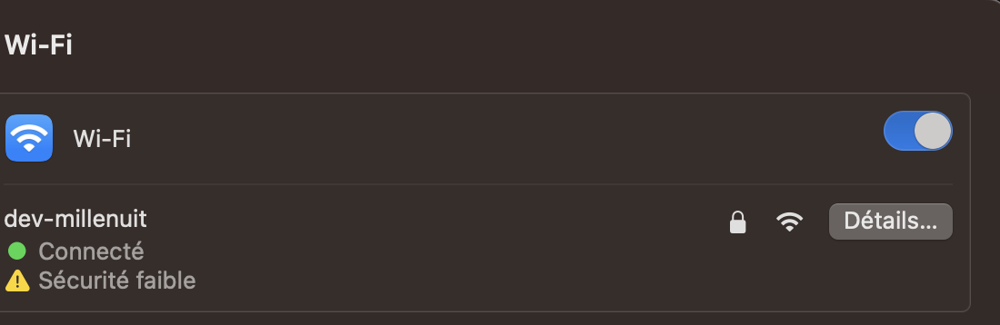
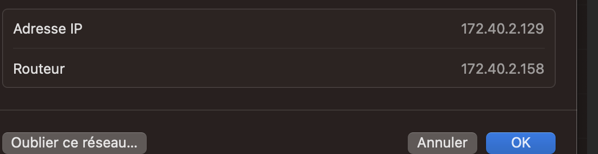

SP4 - Mission 2 - Création d’un sous-réseau développeurs avec accès Wi-Fi sécurisé
Sommaire
- Plan d'adressage
- Tableau d'adressage
- Configuration des équipements
- Mise en place du WiFi
- Fiche de tests
Plan d'adressage incluant le nouveau sous-réseau utilisateurs en accès WiFi
1. Tableau d'adressage
Voici la représentation des différents sous-réseaux dans le réseau 172.16.40.0/16 avec le nouveau sous-réseau utilisateurs en accès WiFi
| Services | Nombre d'hôte | Réseaux | Adresse de diffusion | Passerelle |
|---|---|---|---|---|
| Production | 134 | 172.40.0.0/24 | 172.40.0.255 | 172.40.0.254 |
| Autres | 122 | 172.40.1.0/25 | 172.40.1.127 | 172.40.1.126 |
| Administration | 64 | 172.40.1.128/25 | 172.40.1.255 | 172.40.1.254 |
| VentesEtudes | 59 | 172.40.2.0/26 | 172.40.2.63 | 172.40.2.62 |
| Logistique | 38 | 172.40.2.64/26 | 172.40.2.127 | 172.40.2.126 |
| Utilisateurs Wifi | 20 | 172.40.2.128/27 | 172.40.2.159 | 172.40.2.158 |
| Serveurs | 172.16.56.0/24 | 172.16.56.253 |
Configuration des équipements
Point d'accès (D-Link)
Mise en place du service DHCP sur le point d'accès (D-Link)

Détail de la configuration DHCP :
- Baux d'adresses (étendues) : 172.40.2.129 à 172.40.2.143 (15 postes)
- Masque de l'adressage : /27
- Passerelle par défaut : 172.40.2.158
- Serveur DNS : 172.16.55.1
Switch reliant le point d'accès au routeur
- Intégration d'un nouveau VLAN
Routeur reliant le switch vers Internet
- Passerelle par défaut du réseau de la salle développeurs dans une sous-interface avec le même numéro de VLAN que le switch (172.40.2.158)
- Commande
ip helper-address 172.16.5.11pour permettre à des équipements du même réseau que le routeur de rejoindre le serveur DHCP
Mise en place du WiFi (incluant le SSID caché)
Dans un réseau Wi-Fi, le SSID (Service Set Identifier) correspond au nom visible du réseau auquel les utilisateurs se connectent.
Par défaut, ce nom est diffusé publiquement par le routeur afin d’être facilement détecté par les appareils à proximité.
Un SSID caché (ou réseau non diffusé) est un réseau Wi-Fi dont le nom n’est pas visible dans la liste des réseaux disponibles.
Le point d’accès cesse simplement de diffuser son SSID, obligeant l’utilisateur à saisir manuellement :
- le nom du réseau
- les paramètres de sécurité
Paramétrage du SSID
Paramétrage du SSID caché (SSID Broadcast désactivé).
Pour afficher le SSID, il faut réactiver le SSID Broadcast.

Fiche de tests
Connexion avec SSID visible
Connexion au point d'accès avec SSID visible et saisie de la passphrase


Connexion avec SSID non visible
Connexion au point d'accès avec SSID caché et saisie manuelle



Configuration DHCP fonctionnelle
Configuration DHCP sur le PC connecté au WiFi (SSID dev-millenuit)
